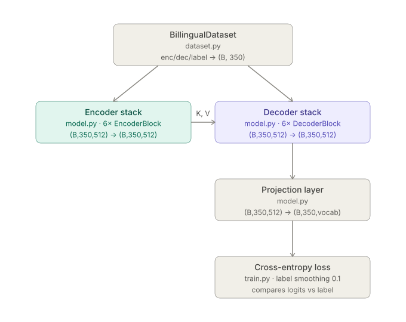
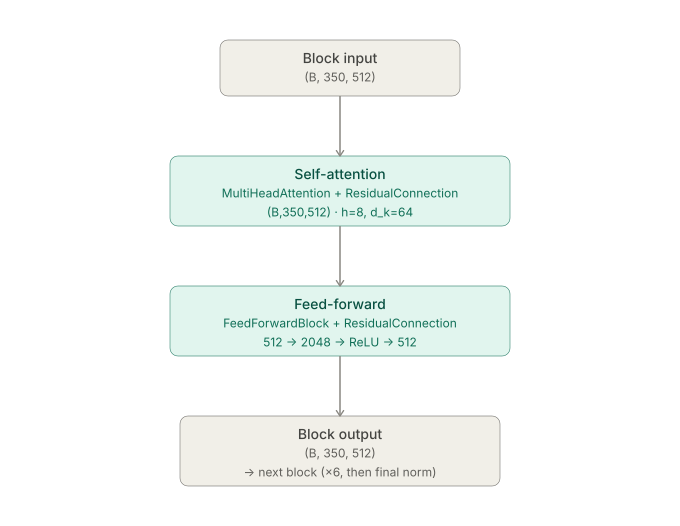
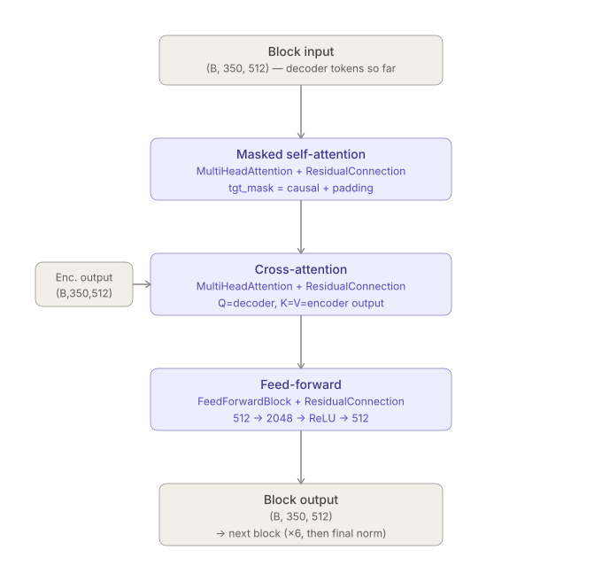

Why Rebuild the Transformer From Scratch?
There’s no shortage of transformer tutorials floating around. It’s the most basic deep learning architecture in NLP today, so why bother building one from scratch again?
Because it’s exactly that: the basic building block for almost every architecture running today. I spend my actual working hours around fast-conformer models and diffusion models, but actually building this basic transformer with my own hands (and several 2am debugging sessions) turned out to be very different and suprisingly very insightful. Enough that I decided I had to write a log about it.
So here’s that log. I built an encoder-decoder transformer straight from the original paper, trained it on opus_books for English to Italian translation, and kept a running list of every question that had me pausing mid-line wondering what the authors were thinking.
The source lives in four files: model.py for the architecture, dataset.py for the data pipeline, config.py for the hyperparameters, and train.py for the training loop. code link
Architecture at a Glance
Six encoder blocks feed a stack of six decoder blocks through cross-attention, exactly as in the 2017 paper. d_model = 512, h = 8 heads, d_ff = 2048, max_seq_len = 350, dropout = 0.1.



1. Text Embeddings: Turning Tokens Into Vectors
Let \(W_E \in \mathbb{R}^{V \times d_{model}}\) be the learnable embedding weight matrix.
The text embedding formula for a given token at position \(pos\) with vocabulary index \(k\) is: \[E_{pos} = W_E[k] \cdot \sqrt{d_{model}}\]
nn.Embedding is just a lookup table: [vocab_size, d_model], initialized randomly and learned during training. During forward pass :- [batch, seq_len] -> [batch, seq_len, d_model]
The positional encodings (next section) have values bounded in [-1, 1]. Raw embeddings, especially right after Xavier init, sit at a much smaller scale.
√d_model scale-up the text embeddings that becomes comparable to the additive positional signal early in training.
2. Positional Encoding: Giving the Model a Sense of Order
Formulas:-
For even dimensions (\(2i\)): \[PE_{(pos, 2i)} = \sin\left(\frac{pos}{10000^{\frac{2i}{d_{model}}}}\right)\] For odd dimensions (\(2i + 1\)): \[PE_{(pos, 2i+1)} = \cos\left(\frac{pos}{10000^{\frac{2i}{d_{model}}}}\right)\] \(i\) is a specific feature dimension (where \(i\) goes from \(0\) to \(d_{model}/2\))
The maths behind chosing sin and cos, it’s pros and cons and recent advancements in positional encoding is discussed in my other blog: [link: to be done]
Two implementation details:
register_buffer, notnn.Parameter: Registering in buffer allows the deterministic embeddings that never gets trained to be moved with the model across.to(device)calls and be saved/restored instate_dict().- The
e^(ln(A)B)trick:10000^(-2i/d_model)is computed asexp(-2i/d_model * ln(10000))becausetorch.powon a fractional, negative exponent across a whole tensor is less numerically stable than composingexpandlog, which PyTorch has fast, stable kernels for.
\[X_{final} = \text{Dropout}\Big( E_{pos} + PE_{pos} \Big)\]
The information in the original paper is a bit scattered, so here’s a summary of where dropout is applied: Link
3. LayerNorm From Scratch
As data moves non-linear activations and weight multiplications leads to Internal Covariate Shift.
- The variance of the activations grows too large -> the gradients explode
- It shrinks too much -> the gradients vanish
Normalization solves this by forcing the activations back to a standard scale (typically a mean of 0 and a variance of 1) at every layer. The general mathematical formula for normalization is: \[y = \frac{x - \mu}{\sqrt{\sigma^2 + \epsilon}} \cdot \gamma + \beta\]
BatchNorm normalizes across batch dimension and assumes batch statistics are stable and representative. Two things break that assumption here:
- Variable sequence lengths + padding: Batch statistics get polluted by padding tokens that are used to fill sequences to the same length.
- Batch size of 1 at inference: BatchNorm’s statistics are undefined (or at best a single noisy sample) at batch size 1.
LayerNorm is better here because it normalizes across the feature dimension (d_model) independently per token, so it behaves identically whether the batch is 1 sentence or 64.
4. Multi-Head Attention
\[\text{Attention}(Q, K, V) = \text{softmax}\left(\frac{Q K^T}{\sqrt{d_k}}\right) V\]
q,k,vstart as[batch, seq_len, d_model].
- Then first it is converted to
[batch, seq_len, h, d_k](d_k = d_model/h)
- And then transposed to
[batch, h, seq_len, d_k]
WHY???? -> Allows each head to take info from all the seq tokens - After attention,
.transpose(1, 2).contiguous().view(...)merges the heads back..contiguous()is required here because.transposereturns a view with non-contiguous memory, and.view()refuses to operate on that.
Assume the components of q and k are roughly independent with mean 0 and variance 1 (a reasonable approximation right after Xavier/careful init). The dot product q·k sums d_k such independent products, so its variance grows to Var(q·k) ≈ d_k - the standard deviation grows as √d_k.
And when passed through softmax, it is exponentiated and output collapse towards one-hot. (ex output: [0.999, 0.001, 0.000]) The gradient of softmax with respect to its logits is roughly p(1-p), which is near zero for entries pinned near 0 or 1. So your gradients completely die. Your model just sits there, learning nothing.
Dividing by √d_k renormalizes the dot product back to unit variance regardless of d_k and prevents gradient collapse.
5. The FeedForward Block
Two linear transformations with a ReLU activation in between. (512 -> 2048 -> RELU -> 512) FFN(x) = max(0, W·x + b1)W2 + b2 This block is applied pointwise.
Each token, in isolation, does its own nonlinear processing on what it just gathered.
The dropout inside the FFN, between linear_1 and linear_2, is a modern addition.
Why it matters: d_ff is 4× d_model. Here, neurons can co-adapt (learn to always fire together to reproduce memorized patterns). A dropout is applied in the residual connection but it only acts on the compressed final output and can’t see or break up that internal co-adaptation. Internal FFN dropout regularizes the expanded space directly.
| Scenario | Internal FFN dropout needed? |
|---|---|
Small model, small d_ff |
Not much, residual dropout is enough |
Large model, large d_ff |
Yes, co-adaptation risk grows with size |
| Fine-tuning on small datasets | Yes, overfitting risk is real |
| Large-scale pretraining | Often removed, data volume is the regularizer |
Pheww !! That was a lot. But it’s not over yet. Here is the next post that starts form Residual connections (The real magic of the transformers) and goes on to explain the design choices, introduce masking and then moves onto different training nuances. link